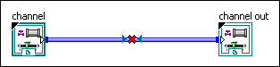

This channel wire enters and leaves the same subVI through the connector pane. Because channel wires do not create dataflow dependency, it is semantically meaningless for a channel to pass through a subVI.

To correct this error, either replace one end or the other of the channel wire with a channel wire endpoint or avoid routing the channel through the subVI entirely.